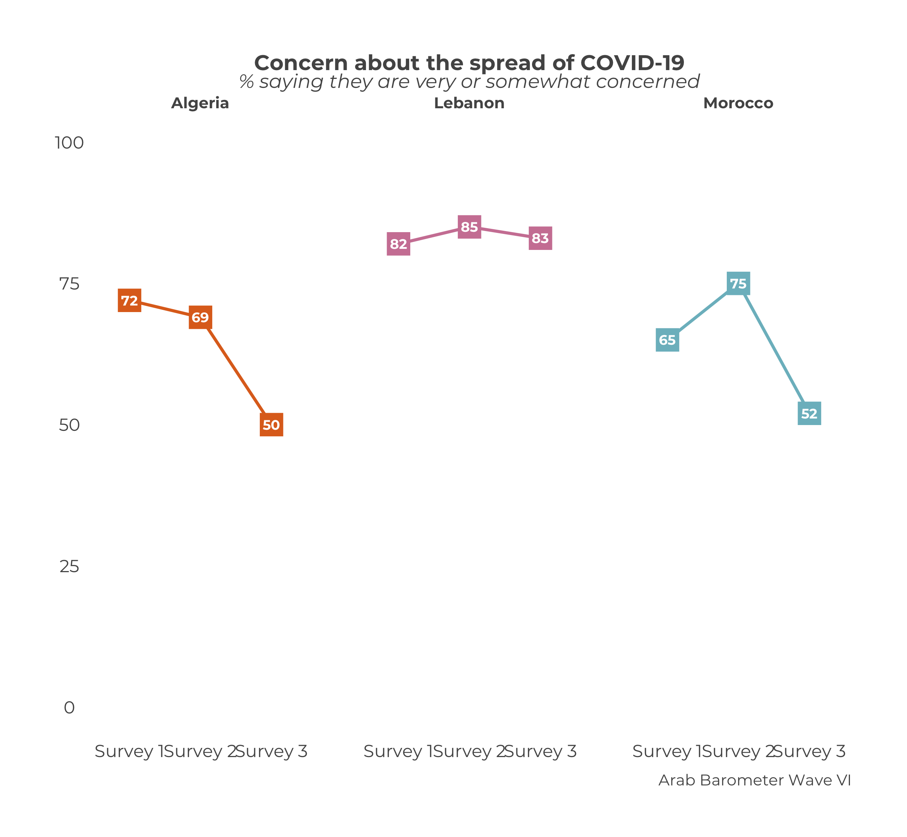

Chapter 11 Comparative Country Trend Graphs
The chapter covers how to create a trend graph for many countries, not just one.
TL;DR
At the end, your code will look like the following:
df_list <- list(
survey1,
survey2,
survey3
)
ab_survey_dates <- c("Survey 1",
"Survey 2",
"Survey 3")
calculate_comp_trend("Q1COVID19",
df_list,
ab_survey_dates) |>
plot_comp_trend(.caption = "Arab Barometer Wave VI")The code produces this graph:

You may notice that the code here is very similar to that for single country trend graphs. In fact, the only differences are that the user does not have to specify a country and the names of the function.
Let’s go!
11.1 Prep Work
Just like in Chapter 9 (and all the other trend plot chapters), it is useful to do some prep work before hand. This makes your work more clear and your life easier down the line.
The prep work for creating a comparative trend graph is exactly the same as the prep work suggested for creating a trend graph for a single country.
11.1.1 Create a Data Frame List
The first step is to create a list of data frames.
There should be one data frame for each period you wish to graph. That is, each data frame should be from a different survey you want to include in your graph. In the example for the chapter, we’re using the three surveys from Wave VI, which we call survey1, survey2, and survey3. Each survey is its own data frame.
The list of data frames should be in the order you want them to appear (ideally, chronologically). The data on the graph will show up in the order of the list. So if you create a list in the order list(survey2, survey1, survey3), the data from survey2 will show up before the data from survey1.
Please note: This is ambivalent to language! The plot_comp_trend() function will assume the order of the list is the correct order, and treat it accordingly. When you enter a list as list(survey1, survey2, surveye3), the English graph will show the data right to left (survey 1 -> survey 2 -> survey 3), while the Arabic graph will show the data left to right (survey 3 <- survey 2 <- survey 1). You do not need to alter your input.
The data frame lists in the
Wave8TrendDatapackage do this step for you.
11.1.2 Create a Date Vector
The next step is to create a vector of the dates you want to show on the x-axis of your graph. Branding guidelines call for the years in which the survey took place. For simplicity in the example, let’s just say "Survey X Year".
You need a date for each data frame in your data frame list. Otherwise, the function won’t know how to label the x-axis.
The dates should also be in the order you want them to appear. The dates should line up with the data frames. In the chapter example, the order of the data frames is survey 1, survey 2, survey 3. Therefore, the survey dates need to have the order survey 1 year, survey 2 year, survey 3 year.
Please note: This is ambivalent to language! Just as with the data frame list, the plot_comp_trend() function will put the data in the correct order according to the language of the graph.
The date vectors in the
Wave8TrendDatapackage do this step for you.
Now that we have defined our data frame list and survey dates, we can create our trend plot.
11.2 Create a Summary
To calculate a trend summary for multiple countries, use the calculate_comp_trend() function.
This function takes a few more parameters, and in a different order, than the functions we have worked with so far. In total, there are three necessary parameters: ab_var, ab_data_list, and ab_survey_dates. To see a complete list of parameters, including optional ones, use ?calculate_comp_trend() in your R console.
The parameter ab_var is the variable you want to plot. It must have the same name in every data frame in the data frame list. If the variable you want to plot is named "Q101" in one sure, but "Q102" in another, the function will not include "Q102" in the plot. Computers can do a lot but as of yet they cannot think critically, so the onus is on you.
The trend data lists from the
Wave8TrendDatapackage ensure this is true for Wave VIII variables.
The parameter ab_data_list is a list of data frames. This is what we created here.
The parameter ab_survey_dates is a character vector of dates that will show up on the x-axis of the graph. This is what we created here.
Now let’s fill it in.
calculate_comp_trend(
ab_var = "Q1COVID19", # Variable to graph
ab_data_list = df_list, # List of data frames
ab_survey_dates = ab_survey_dates # Vector of survey dates
)The output should look like the following, with the Survey column labeled.
| Survey | Question | Country | Percent |
|---|---|---|---|
| 1 | Q1COVID19 | Algeria | 72 |
| 1 | Q1COVID19 | Lebanon | 82 |
| 1 | Q1COVID19 | Morocco | 65 |
| 2 | Q1COVID19 | Algeria | 69 |
| 2 | Q1COVID19 | Lebanon | 85 |
| 2 | Q1COVID19 | Morocco | 75 |
| 3 | Q1COVID19 | Algeria | 50 |
| 3 | Q1COVID19 | Lebanon | 83 |
| 3 | Q1COVID19 | Morocco | 52 |
We can see the output has nine rows; one for each country for each survey. Let’s save the output as an object so we can plot that object in the next section.
11.3 Plot the Summary
The next step is to plot the summary we just created. To do that, we use the function plot_comp_trend().
This function only requires one argument: ab_summary. Like many other graphs, we’ll want to add a bit later on. To see a complete list of parameters, including optional ones, use ?plot_comp_trend() in your R console. For now, let’s see what happens when we just supply our summary we saved as comparative_trend_summary.

Nearly there! What still needs to be changed?
The caption, of course! Just as in all the other plot_ functions in the ArabBarometR package, you can change the caption using the .caption parameter.

Putting all the steps together, we have the code and graph we originally started with.

11.4 Extras
11.4.1 Human Readable
If you just want to look at the summaries and not necessarily create a plot, the output of calculate_comp_trend() might not be the easiest to understand from a glance. There is a parameter called human_readable that is designed to help with that.
By default, human_readable is set to FALSE and each row is unique to the survey-country. If human_readable is set to TRUE, each is unique to a country and there are columns for each wave.
calculate_comp_trend(
ab_var = "Q1COVID19",
ab_data_list = df_list,
ab_survey_dates = ab_survey_dates,
human_readable = FALSE # This is the default
)| Survey | Question | Country | Percent |
|---|---|---|---|
| 1 | Q1COVID19 | Algeria | 72 |
| 1 | Q1COVID19 | Lebanon | 82 |
| 1 | Q1COVID19 | Morocco | 65 |
| 2 | Q1COVID19 | Algeria | 69 |
| 2 | Q1COVID19 | Lebanon | 85 |
| 2 | Q1COVID19 | Morocco | 75 |
| 3 | Q1COVID19 | Algeria | 50 |
| 3 | Q1COVID19 | Lebanon | 83 |
| 3 | Q1COVID19 | Morocco | 52 |
calculate_comp_trend(
ab_var = "Q1COVID19",
ab_data_list = df_list,
ab_survey_dates = ab_survey_dates,
human_readable = TRUE # This is NOT the default
)| Question | Country | Wave1 | Wave2 | Wave3 |
|---|---|---|---|---|
| Q1COVID19 | Algeria | 72 | 69 | 50 |
| Q1COVID19 | Lebanon | 82 | 85 | 83 |
| Q1COVID19 | Morocco | 65 | 75 | 52 |
The default is set to FALSE because that is the structure plot_comp_trend() expects. If you set human_readable to TRUE and use that output in plot_comp_trend(), you will get an error.
11.4.2 Country Wrap
Sometimes you may want to compare all the countries in one graph, but not have all the lines on top of each other. To create a graph with all the countries in their own facet, you can use the parameter .country_wrap. By default this parameter is set to FALSE, but if the user sets it to TRUE the graph will display each country’s trend individual. Example code and graph is below.
calculate_comp_trend("Q1COVID19",
df_list,
ab_survey_dates) |>
plot_comp_trend(.caption = "Arab Barometer Wave VI",
.country_wrap = TRUE)
11.4.3 Select Countries
By default, calculate_comp_trend() plots data for all the countries in the data. To learn how to plot data from select countries, see the chapter on selecting countries.
11.4.4 Font Size
The font size default brand size is used for the graph text. You can learn how to change that in the chapter on changing the font size.
11.4.5 Colors
You can learn how to change the colors for the comparative trend graph in the chapter on changing graph colors.